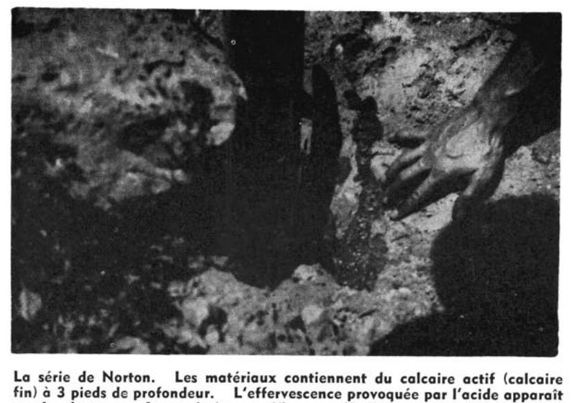

Identification & Caractéristiques Générales
La série de sols Norton s'est développée sur un matériau parental constitué de limon sablo-graveleux caillouteux, reposant généralement sur un till calcaire. Sur le plan géomorphologique, ce type de sol occupe les pentes et les flancs des cônes ou des coteaux de till, ainsi que des secteurs de plaine au micro-relief légèrement à fortement ondulé, caractérisés par des altitudes variant de 175 à 220 pieds. Le substratum ou la roche-mère calcaire se manifeste fréquemment à une profondeur d'environ trois pieds et présente une réaction alcaline provoquant une vive effervescence au contact de l'acide chlorhydrique dilué.
Morphologiquement, le profil se caractérise par une texture dominante plus sableuse et plus profonde que celle des sols de la série St-Bernard, tout en renfermant des pierres abondantes disséminées à la surface et à travers tout le profil. Le drainage externe est généralement adéquat, bien qu'il puisse être localement entravé par l'absence d'émissaires ou par la présence de secteurs subhorizontaux au sommet des coteaux. Le drainage interne est bon sur les élévations topographiques mais demeure lent dans l'ensemble du profil. La réaction chimique de surface varie de fortement à moyennement acide, tandis que le sous-sol montre une acidité moyenne.
Sur le plan agronomique, la mise en valeur des sols de la série Norton est fortement restreinte par la pierrosité abondante et la compacité de certaines phases, ce qui confine de nombreux secteurs à l'état de boisés, de terres de pasturage ou de zones incultes. La végétation naturelle des secteurs non défrichés est constituée d'essences feuillues, telles que l'érable à sucre, l'érable rouge, le hêtre et le frêne, associées à des conifères comme la pruche, le pin et le cèdre. L'exploitation agricole de ces sols nécessite des interventions majeures d'aménagement, incluant l'épierrage mécanique, l'installation d'un réseau de drainage souterrain adéquat pour corriger la lenteur du drainage interne, ainsi qu'un chaulage correctif pour neutraliser l'acidité de surface avant d'envisager des cultures intensives.
Classification Taxonomique & Environnement Pédologique
| Ordre Pédologique | Brunisolique |
|---|---|
| Grand Groupe (SCSS) | Brunisol dystrique |
| Sous-Groupe Taxonomique | Brunisol dystrique orthique |
| Famille Pédologique | Loameuse-grossière, mixte sableux, alcalin (calcaire) |
| Mode de Dépôt Parental | Morainique |
| Classe de Drainage Naturel | Modérément bien drainé |
| Régime Thermique & Humidité | Doux / Subhumide |
Description Morphologique du Profil Type
Séquences génétiques des horizons pédologiques caractérisant le profil type représentatif de la série Norton :
Profil naturel (vierge) — Comté de Châteauguay — Phase rocheuse
✓ Source : Comté de Châteauguay — Page 89Couleur Munsell : Non précisée
Structure & Consistance : Polyédrique à granulaire
Description morphologique : Horizon composé d'humus et de débris végétaux.
Couleur Munsell : 10YR 5/2
Structure & Consistance : Finement granulaire
Description morphologique : Limon sablo-graveleux caillouteux, moyennement humifère, de teinte brun foncé à l'état humide à brun-gris à l'état sec (10YR 5/2). Structure finement granulaire. Consistance friable; pH : 6.0.
Couleur Munsell : Non précisée
Structure & Consistance : Finement granulaire
Description morphologique : Horizon souvent absent, de coloration plus pâle que le suivant, friable. Structure finement granulaire. Réaction ou pH : 6.3.
Couleur Munsell : 10YR 6/4
Structure & Consistance : Granulaire peu développée
Description morphologique : Horizon qui se subdivise en horizon B 21 et B 22 lorsque l'horizon A 2 est présent. Limon sablo-graveleux pierreux, brun-jaune pâle à la partie supérieure du profil à brun pâle à la base (10YR 6/4 à 6/3) à l'état sec. Structure granulaire peu développée. Présence de pierres et de cailloux décalciés; pH : 6.8 — 7.2.
Couleur Munsell : Non précisée
Structure & Consistance : Polyédrique à granulaire
Description morphologique : Horizon de gley d'épaisseur variable et plus ou moins apparent, suivant que le drainage est plus ou moins bon (influence du micro-relief).
Couleur Munsell : Non précisée
Structure & Consistance : Polyédrique à granulaire
Description morphologique : Roche-mère : Till sablo-graveleux caillouteux. Présence de gros blocs calcaires et de cailloux striés. La masse est cimentée, de coloration grise et réagit vivement au contact de HCl dilué. Réaction ou pH : 8.0.
Profil représentatif — Comté de Huntingdon — Phase rocheuse
✓ Source : Comté de Huntingdon — Page 179Couleur Munsell : Non précisée
Structure & Consistance : Polyédrique à granulaire
Description morphologique : Feuilles mortes et débris végétaux en voie de décomposition avec humus brun noir.
Couleur Munsell : Non précisée
Structure & Consistance : Grumeleuse
Description morphologique : Limon sablo-caillouteux noir, structure grumeleuse, poreux. pH: 7.2.
Couleur Munsell : 5Y 4/3
Structure & Consistance : Finement mietteuse
Description morphologique : Limon sablo-caillouteux, brun rouge (5Y 4/3), structure finement mietteuse. pH: 7.4.
Couleur Munsell : 7.5YR 5/7, 10YR 6/4
Structure & Consistance : Grossièrement nuciforme ou finement mietteuse
Description morphologique : Limon sablo-gravelo caillouteux, brun jaunâtre à brun (7.5YR 5/7), avec fragments rocheux altérés de couleur jaune chamois pâle ou brun jaune clair (10YR 6/4). Structure grossièrement nuciforme ou finement mietteuse. Horizon assez compact. La fermeté des matériaux s'accroît avec la profondeur et dans ce cas, la structure devient laminaire. pH: 7.7.
Couleur Munsell : 10YR 4/2 (matrice), 10YR 5/8 (marbrures)
Structure & Consistance : Polyédrique à granulaire
Description morphologique : Limon sablo-gravelo caillouteux, brun gris foncé (10YR 4/2) et brun jaune (10YR 5/8) souvent parsemé de nodulets ou roches altérées de couleur rouille ou jaune d'oeuf. On observe aussi des mouchetures de rouille peu abondantes. Moyennement compact. pH: 8.0.
Couleur Munsell : 10YR 6/6, 10YR 5/4, 10YR 4/4, 10YR 5/2, 10YR 5/3
Structure & Consistance : Polyédrique à granulaire
Description morphologique : Till limono-sabło caillouteux calcaire, d'apparence jaune pâle à chamois pâle dans l'ensemble, mais bariolé des teintes suivantes: jaune brun (10YR 6/6), brun jaune (10YR 5/4), brun jaune foncé (10YR 4/4), brun gris (10YR 5/2), brun (10YR 5/3). Très compact et fortement tassé (hardpan). Ce till est constitué de cailloux anguleux et subanguleux de dolomie, de grès siliceux et de matériaux laurentiens (granits, gneiss, etc.).
Profils Photographiques & Planches de Terrain
Documents iconographiques, figures pédologiques et coupes de terrain documentées dans les mémoires d'inventaire pour de la série Norton :


Propriétés Physico-Chimiques & Analyses de Laboratoire
| Horizon | Prof. (pces) | pH | C org. % | N % | C/N | Sable grossier % | Sable fin % | Sable tot. % | Limon % | Argile % | Ca éch. | Mg éch. | K éch. | Na éch. | Bases tot. | C.E.C. | Saturation % |
|---|---|---|---|---|---|---|---|---|---|---|---|---|---|---|---|---|---|
| Couchede surface | N | 1 | 1 | 1 | 1 | 1 | 1 | 1 | 1 | 1 | 1 | 1 | 1 | 1 | 1 | 1 | LSF |
| Moyenne | 3,5 | 21,4 | 24,5 | 9,3 | 60,5 | 26,9 | 12,6 | 5,3 | 1,96 | 2,8 | 0,90 | 0,22 | 0,04 | 10,95 | 20,0 | ||
| Inférieure | - | - | - | - | - | - | - | - | - | - | - | - | - | - | - | ||
| Supérieure | - | - | - | - | - | - | - | - | - | - | - | - | - | - | - | ||
| CV | - | - | - | - | - | - | - | - | - | - | - | - | - | - | - | ||
| N | 5 | 5 | 5 | 5 | 5 | 5 | 5 | 5 | 5 | 5 | 5 | 5 | 5 | 5 | 5 | L, LLi | |
| Moyenne | 3,8 | 7,0 | 12,1 | 18,4 | 43,8 | 37,8 | 18,4 | 5,8 | 3,79 | 9,4 | 2,42 | 0,20 | 0,05 | 23,80 | 10,0 | ||
| Inférieure | 3,2 | 5,1 | 9,7 | 12,1 | 38,7 | 32,8 | 15,0 | 5,5 | 2,52 | 6,5 | 1,15 | 0,15 | 0,04 | 19,48 | 4,7 | ||
| Supérieure | 4,5 | 9,0 | 14,5 | 24,7 | 48,8 | 42,7 | 21,9 | 6,1 | 5,52 | 13,5 | 4,45 | 0,25 | 0,06 | 29,04 | 20,0 | ||
| CV | 17,0 | 28,8 | 21,0 | 36,0 | 12,1 | 13,7 | 19,4 | 5,8 | 20,6 | 14,7 | 39,6 | 24,5 | 27,7 | 6,3 | 28,6 | ||
| Classe de contenu** | M | M | M | F | TF | M | TF | ||||||||||
| Sous-sol | N | 7 | 7 | 7 | 7 | 7 | 7 | 7 | 7 | 7 | 7 | 7 | 7 | 7 | 7 | 7 | |
| Moyenne | 5,5 | 10,1 | 15,5 | 15,2 | 50,8 | 36,7 | 12,5 | 6,2 | 1,03 | 4,5 | 1,02 | 0,09 | 0,05 | 12,29 | 19,4 | ||
| Inférieure | 4,2 | 6,5 | 11,7 | 10,2 | 42,3 | 29,7 | 9,2 | 5,8 | 0,84 | 3,3 | 0,57 | 0,07 | 0,04 | 10,46 | 12,7 | ||
| Supérieure | 6,8 | 13,6 | 19,2 | 20,1 | 59,3 | 43,7 | 15,9 | 6,5 | 1,24 | 6,1 | 1,60 | 0,10 | 0,07 | 14,42 | 29,3 | ||
| CV | 31,9 | 47,7 | 33,0 | 44,2 | 22,8 | 25,9 | 36,5 | 7,7 | 19,0 | 20,6 | 48,9 | 28,2 | 37,1 | 7,8 | 18,0 | ||
| Substratum | N | 7 | 7 | 7 | 7 | 7 | 7 | 7 | 7 | 7 | 7 | 7 | 7 | 7 | 7 | 7 | |
| Moyenne | 5,6 | 7,8 | 13,3 | 16,3 | 48,0 | 40,9 | 11,2 | 7,8 | 0,18 | 9,9 | 1,35 | 0,08 | 0,04 | 7,39 | 20,5 | ||
| Inférieure | 3,9 | 5,4 | 8,8 | 14,0 | 38,3 | 32,9 | 6,2 | 7,4 | 0,09 | 6,4 | 0,77 | 0,06 | 0,03 | 5,75 | 6,8 | ||
| Supérieure | 7,3 | 10,3 | 17,7 | 18,5 | 57,6 | 48,8 | 16,2 | 8,2 | 0,28 | 15,0 | 2,11 | 0,09 | 0,05 | 9,43 | 58,6 | ||
| CV | 41,5 | 42,0 | 45,6 | 18,5 | 27,4 | 26,5 | 61,0 | 6,9 | 66,4 | 21,9 | 45,0 | 24,4 | 43,8 | 13,9 | 45,2 |
Particularités Régionales, Phases & Variantes Pédologiques
Déclinaisons régionales, faciès texturaux, phases d'érosion ou de pierrosité et variantes cartographiées par étude pour de la série Norton :
| Étude Régionale | Symbole | Appellation / Phase / Variante | Différenciation avec la série type (Analyse pédologique) |
|---|---|---|---|
| Comté de Huntingdon | No |
Norton loam sableux caillouteux | Modalité modale de référence (type de base de la série). |
No-R |
Norton loam sableux caillouteux phase rocheuse | Conforme à la série type de référence (caractéristiques texturales et drainage identiques). | |
| Comté de Châteauguay | No |
Norton loam sableux graveleux caillouteux | Phase graveleuse à perméabilité accrue et réserve utile diminuée. |
No-R |
Norton loam sableux graveleux caillouteux phase rocheuse | Phase graveleuse à perméabilité accrue et réserve utile diminuée. | |
| Comté de Laprairie | NT3cbq |
Norton loam caillouteux 3-8 % de pente très pierreux | Phase très pierreuse limitant le travail aratoire et l'implantation culturale; Faciès loameux plus fin et équilibré que le loam sableux de référence (meilleure rétention en eau et nutriments). |
NT3cbqr |
Norton loam caillouteux 3-8 % de pente très pierreux légèrement à modérement rocheux | Phase très pierreuse limitant le travail aratoire et l'implantation culturale; Faciès loameux plus fin et équilibré que le loam sableux de référence (meilleure rétention en eau et nutriments). | |
| Comté de Napierville | NTbp |
Norton 3-8 % de pente légèrement à modérément pierreux | Phase légèrement à modérément pierreuse (obstruction mécanique modérée). |
NTbq |
Norton 3-8 % de pente très pierreux | Phase très pierreuse limitant le travail aratoire et l'implantation culturale. | |
| Comté de Saint-jean | NTbp |
Norton loam caillouteux 3-8 % de pente légèrement à modérément pierreux | Phase légèrement à modérément pierreuse (obstruction mécanique modérée); Faciès loameux plus fin et équilibré que le loam sableux de référence (meilleure rétention en eau et nutriments). |
NTbq |
Norton loam caillouteux 3-8 % de pente très pierreux | Phase très pierreuse limitant le travail aratoire et l'implantation culturale; Faciès loameux plus fin et équilibré que le loam sableux de référence (meilleure rétention en eau et nutriments). | |
NTcq |
Norton loam caillouteux 3-8 % de pente très pierreux | Phase très pierreuse limitant le travail aratoire et l'implantation culturale; Faciès loameux plus fin et équilibré que le loam sableux de référence (meilleure rétention en eau et nutriments). | |
NTmbq |
Norton loam caillouteux 3-8 % de pente très pierreux mince sur roc | Phase très pierreuse limitant le travail aratoire et l'implantation culturale; Phase mince sur substrat rocheux (< 50 cm); Faciès loameux plus fin et équilibré que le loam sableux de référence (meilleure rétention en eau et nutriments). | |
| Comté de St-jean | NOT |
NORTON (NT) | Conforme à la série type de référence (caractéristiques texturales et drainage identiques). |
Distribution Pédo-Paysagère & Représentativité Cartographique (Couverture PPS 2026)
- Perrot loam sableux (PRO) — co-occurrente dans 36 polygone(s)
- Matilda loam (MTD) — co-occurrente dans 35 polygone(s)
- Saint-Bernard loam sableux fin à loam (SBE) — co-occurrente dans 32 polygone(s)
Aptitudes Agronomiques, Hydropédologie & Conservation des Sols
Indicateurs Hydropédologiques & Vulnérabilité à l'Érosion (BDHP 2026)
Interprétation BDHP : Potentiel de ruissellement modérément faible. Infiltration modérée avec textures moyennes à modérément grossières.
Classement selon l'Inventaire des Terres du Canada (ITC / CLI) : Classe 1.
- Potentiel agricole : Terroir adapté aux cultures régionales selon la texture dominante et la régie de drainage.
- Contraintes majeures : Modérément bien drainé. Risque d'engorgement temporaire ou d'excès d'eau printanier.
- Gestion & Aménagement : Drainage souterrain ou superficiel préconisé sur les terres planes. Chaulage et apport organique régulier selon les bilans agronomiques.
- Cultures adaptées : Grandes cultures (maïs, soya, céréales), prairies fourragères et cultures maraîchères selon le contexte géomorphologique.